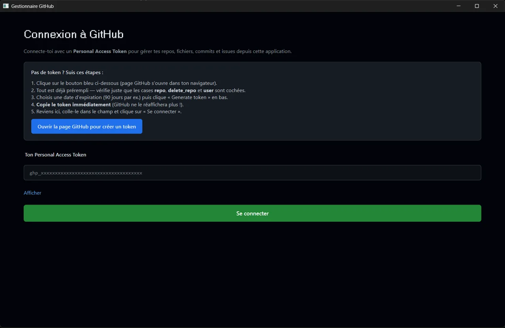

Application de bureau pour gérer ses dépôts GitHub à la souris : lister, modifier, archiver ou supprimer des repos, parcourir les fichiers, lire les commits et gérer les issues. Le token est stocké dans le gestionnaire de mots de passe de Windows.
Projet privé — présenté ici en description et captures. Code et téléchargement non publics.

Lister, modifier, archiver et supprimer, avec confirmation avant toute action destructive.
Parcourir l'arborescence d'un dépôt et lire l'historique des commits.
Consulter et gérer les issues depuis la même fenêtre.
Enregistré via le trousseau Windows (keyring), jamais en clair dans un fichier.